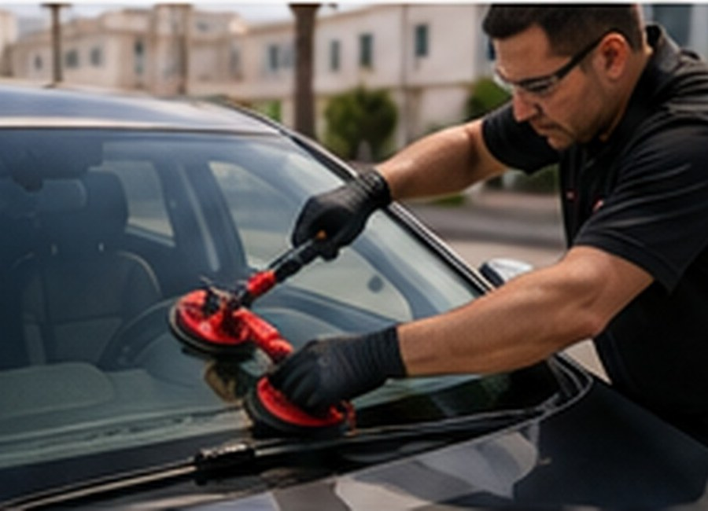
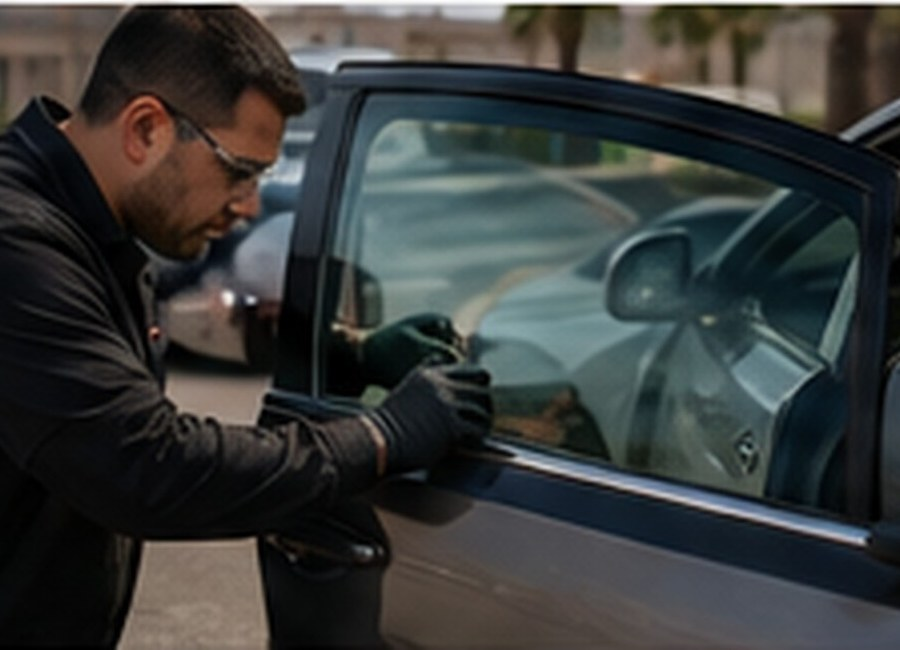
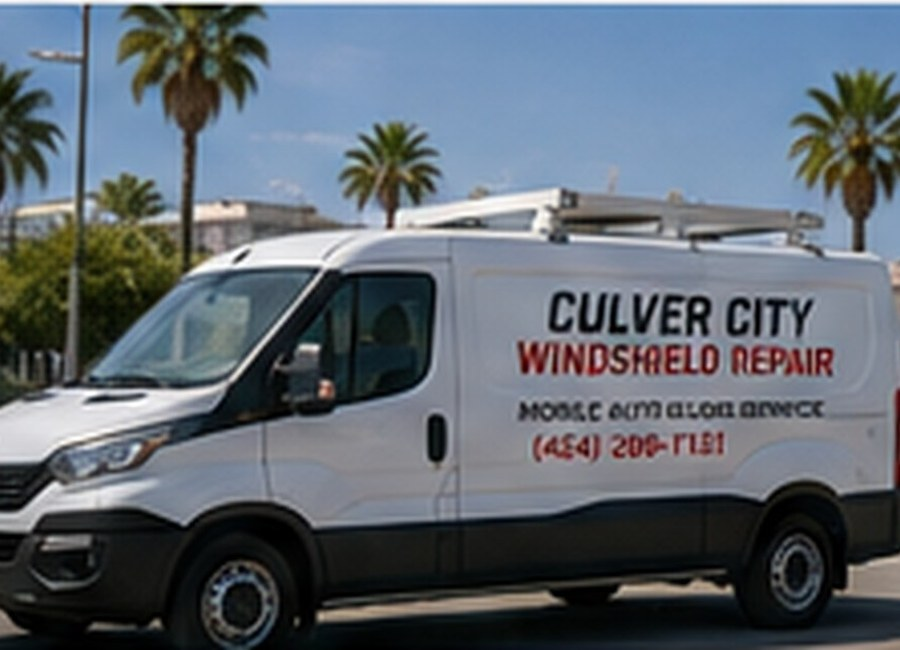
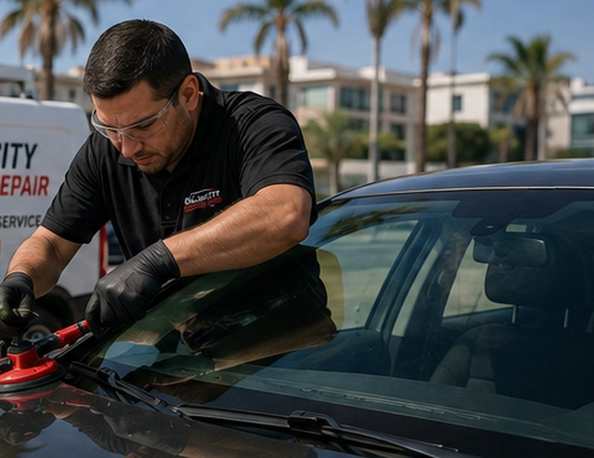

Windshield Replacement
Replace cracked, damaged, or shattered windshields with a professional installation.
- Quality replacement glass
- Professional installation
- Mobile service available
- Safety-focused workmanship
Fast, reliable mobile windshield replacement and auto glass service. We come to your home, office, or convenient location in Culver City.
From windshield replacement to side and rear glass, our mobile technicians make the process simple and convenient.

Replace cracked, damaged, or shattered windshields with a professional installation.

Side windows, rear windows, quarter glass and other vehicle glass replacement.

Our mobile service brings the technician and equipment to your home, office, or location.

Professional Mobile ServiceWe provide windshield replacement and auto glass services with a mobile-first approach. Our technicians can meet you at home, at work, or another convenient location.
We understand that damaged glass is inconvenient. Our goal is to make the replacement process straightforward, safe, and efficient.
Call us, tell us what glass you need, and we will help schedule the service.
Tell us your vehicle and glass needs.
Choose a convenient service location.
Our technician completes the glass service.
Follow the technician's care instructions.
Call Culver City Windshield Repair for a fast quote and convenient mobile service.